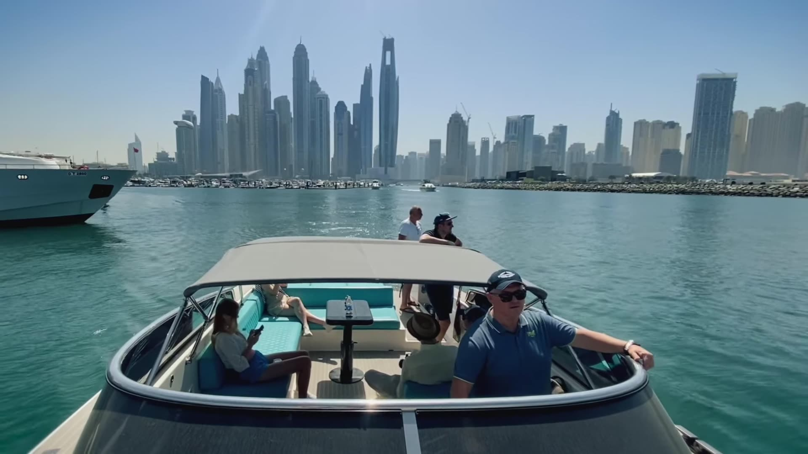
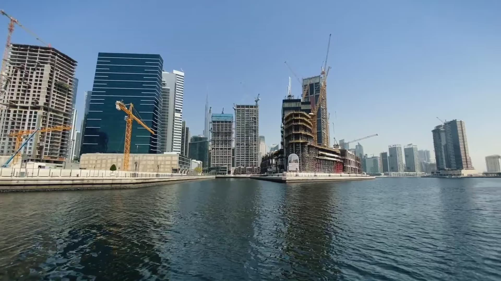
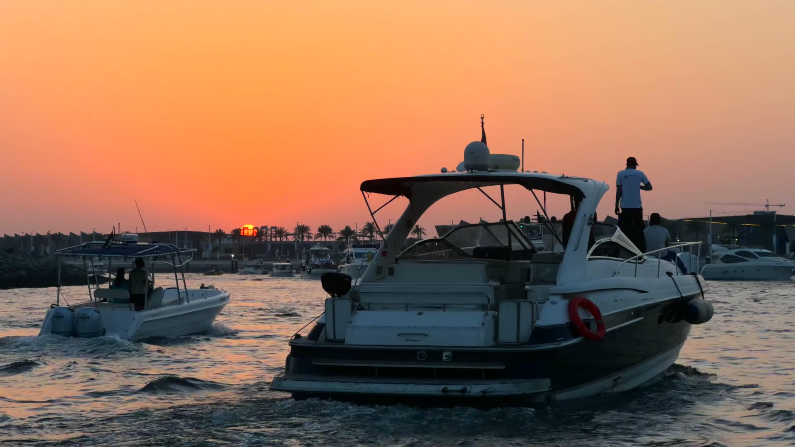
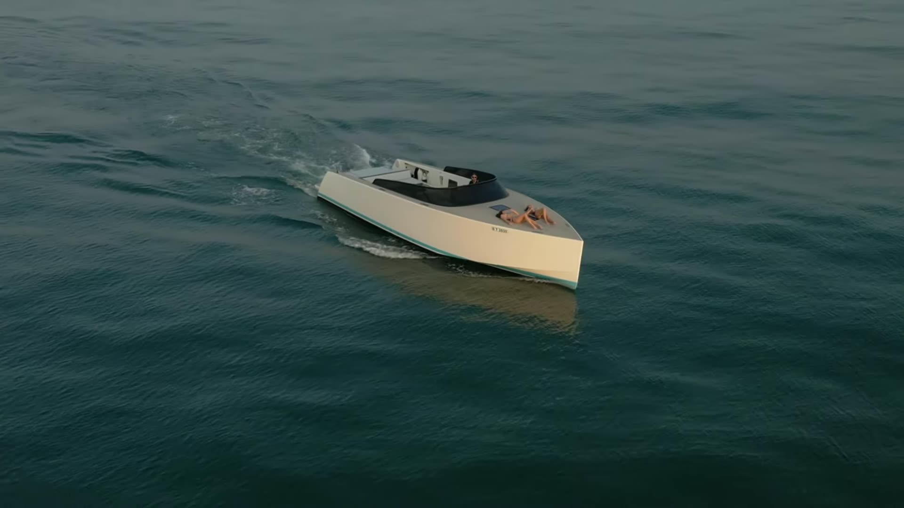

Guides &
articles.
Practical, specific answers to the questions guests ask us most: pricing, itineraries, events, and how to book with an AI assistant.

Yacht Rental Dubai Price Guide 2026: What You'll Actually Pay
How yacht charter pricing really works in Dubai, hourly vs daily rates, seasonal swings from October to September, what's included by default, and the hidden fees to check for before you book.

How Many Hours Should You Book a Yacht for in Dubai?
A practical breakdown of 2, 3, 4, and 6-hour yacht itineraries from Dubai Harbour, what you'll actually see in each timeframe, minute-by-minute, plus how the 4+1 bonus hour works.

Dubai Harbour vs Dubai Marina: Where Should Your Yacht Charter Depart From?
Comparing Dubai's two main yacht departure points on parking, security, walking distance to the boat, and what you see first on the water, a practical guide for choosing where to start your charter.

Birthday Party on a Yacht in Dubai: The Complete Planning Checklist
A step-by-step checklist for planning a birthday charter in Dubai, timeline, guest count vs yacht capacity, catering and decor add-ons with AED price ranges, alcohol rules, and the best sunset timing by month.

What's Included in a Yacht Charter in Dubai, and What Costs Extra
A clear breakdown of what's included in every Imperial Yachting charter versus paid extras like catering, DJ, jet ski, wakeboard, decor, and photography, with typical AED prices and how to add them.

How to Book a Yacht in Dubai Using ChatGPT or Claude
Imperial Yachting exposes a live AI connector (MCP) at imperialyachting.com/api/mcp so ChatGPT, Claude, and Perplexity can browse our fleet, check availability, build a quote, and generate a secure deposit payment link, directly inside your chat.